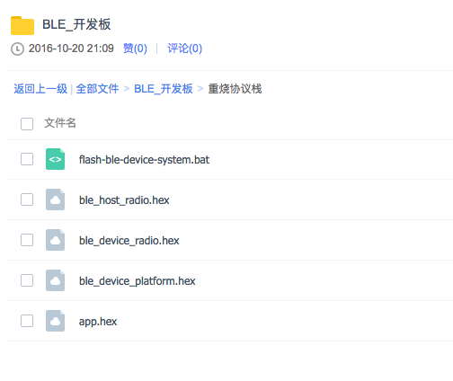
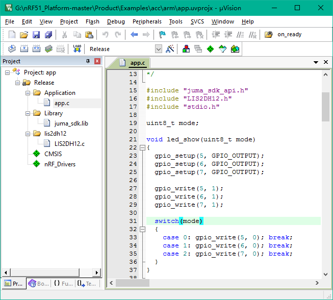

代码学习
nRF51 代码学习¶
本文档只介绍嵌入式代码，手机APP端的代码请自行学习。
分层结构¶
协议栈、SDK和应用层¶
记住，为了跑蓝牙，嵌入式端是需要协议栈的，就像跑网络需要TCP/IP协议栈那样，这个协议栈是由Nordic公司提供的。
我们在Nordic蓝牙协议栈的基础之上，增加了一层SDK，对蓝牙操作以及常见驱动做了一些封装，方便大家开发。
你的嵌入式应用层代码是通过SDK的API来执行的。
好了，我们来看文件，你应该已经下载了嵌入式的开发资源吧，里面有个重烧协议栈的文件夹：

每个文件的作用如下：
flash-ble-device-system.bat -- 烧写脚本
ble_host_radio.hex -- 蓝牙主设备协议栈（入门级用户用不到的）
ble_device_radio.hex -- 蓝牙从设备协议栈
ble_device_platform.hex -- 我们的SDK
蓝牙通信两个设备，一个称为主设备，一个称为从设备。一般手机做主设备，板子做从设备，但是有时，板子也可以做主设备，就需要主设备协议栈了。
协议栈和SDK的烧写需要用脚本，应用层代码烧写用Keil（当然也可以用脚本）。协议栈和SDK烧过一次就可以了，Keil烧写应用层代码的时候，不会覆盖协议栈和SDK的。
协议栈和SDK烧一次就可以了！！
入门级用户，先不要改协议栈和SDK，先玩应用层代码。
目录结构¶
你应该也从github下载了嵌入式代码了吧，就是那个nRF51_Platform的工程。
好了，SDK代码和应用层示例代码都包含在这里了！
我们来看目录结构：
BoardConfig -- 板子配置
Document -- 文档（其实不太全，还是看代码最有用）
Interface -- 接口，就是一个SDK接口，lib库的形式！
Platform -- SDK的代码都在这里，包括main函数！
Product -- 应用层的示例工程代码
几个重要工程¶
1. SMP ACC工程¶
玩SMP开发板的朋友，就是要获取3轴的原始数据，这个工程在哪里呢？
nRF51_Platform/Product/Examples/acc/
其中，arm文件夹下就是Keil的工程文件，打开如下：

你应该可以想到，这是一个应用层代码的工程。
再说一遍，这是一个应用层代码的工程。
有没有看见左边的juma_sdk.lib，这个就是库，包含了SDK的API。
2. SDK接口工程¶
juma_sdk.lib，这个库，是由SDK接口工程生成的，那么，这个工程在哪里呢？
如果你仔细阅读了第2节，就可以想到，在下面这个路径：
nRF51_Platform/Interface/Project/
3. SDK工程¶
上面这个仅仅是接口，真正的SDK代码工程在下面的路径，包括你们要的main函数：
nRF51_Platform/Platform/Project/
可以想象，这个工程下面和蓝牙API息息相关，和驱动也息息相关，感兴趣的朋友可以阅读一下代码。
可以想象，第1节中那个ble_device_platform.hex，就是由这个工程生成的。
当然，做SDK的目的本身是为了方便开发，为了只玩应用层就可以了，不用接触底层的东西。
亲，如果你只玩过51，别问我为啥要搞这么多工程，分这么多层次，为啥没有main函数，这种问题。。。莫怪我装逼，这是一种设计思想，我只能这样告诉你。